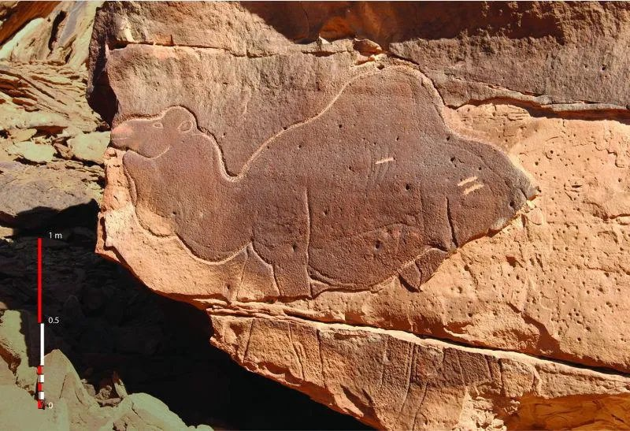

© Smithsonian Magazine
Here a new fresh release of Camel K: version 2.10.0 is ready to go. We’ve worked to several improvements around the GitOps and Git features introduced lately. We’ve stabilized a few bugs discovered and upgraded dependencies as well.
GitOps Pipe
We’ve worked to make sure the Camel GitOps is available not only for Integrations but also for Pipes. The principle is exactly the same. You need to configure the gitops trait on the Pipe you want to include in your GitOps flow and the operator will be in charge to provide a PR on the Git repository with the Pipe custom resource.
GitOps and dry build
We had this work pending in the last release. From version 2.10 onward you’ll be able to join the GitOps feature with the “dry-build” feature. I.E. you can do a complete build and deployment system without the need to run the application on a development environment. With this flexibility you can compose your pipelines to include any testing and staging environments before the Camel application reaches production environment.
Build from Git monorepo
Another Git based feature is the possibility to select a path from where you want to build your application. This is nice if you have a monorepo with several internal applications. You can now configure the Integration to build from a Git repo pointing also to a specific directory.
Kubernetes Gateway API support
There were recently some discussion around Kubernetes Ingress and we decided to prioritize the work we had pending around the new Kubernetes Gateway API. From version 2.10 onward we’re fully supporting it. The Ingress is still an important piece of K8S architecture but it will be likely replaced in the long term by the Gateway. We’re ready for anyone wanting to use this API as well.
IntegrationProfile dependencies
IntegrationProfile custom resource is the future way we’ll support to collect common configuration for all Integrations. We were missing the possibility to include here dependencies. Now we have it!
Deprecations
In this release we’re deprecating what we have experimentally developed some time ago which we called “Synthetic Integrations”. This feature allowed you to be able to monitor in Camel K any Camel application that was deployed externally from the operator. We are replacing it with a new project (we’re temporarily calling it “Camel Dashboard”) that is going to be a great complementary service to Camel K. During 2026 you’ll surely hear more about this new initiative, and you can start already having a look at the project to learn more.
Main dependencies
The operator was built with Golang 1.25 and the Kubernetes API is aligned with version 1.35. We haven’t changed the Camel K Runtime LTS version (3.15.3, based on Camel 4.8.5): this is for backward compatibility reasons. As mentioned already since version 2.7, we’re pushing to the usage of plain-quarkus provider, which allow you to use any released Camel Quarkus version, or Git stored Camel projects.
Full release notes
We had done more stuff, here the full 2.10.0 release notes if you want to learn more about this release.
Stats
Here some stats that may be useful for development team to track the health of the project (release over release diff percentage):
- Github project stars: 916 (+1,5 %)
- Docker pulls over time: 2479009 (+1,8 %)
- Unit test coverage: 62.2 % (+1,8 %)
Thanks
Thanks a lot to our contributors and the hard work happening in the community. Feel free to provide any feedback or comment using the Apache Camel available channels.